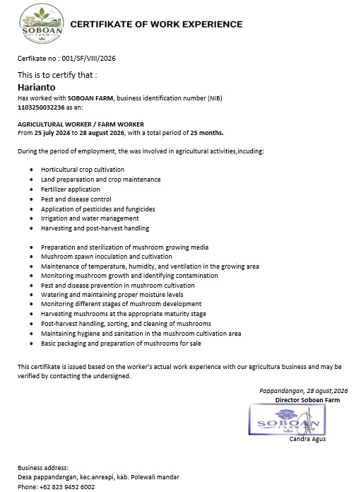
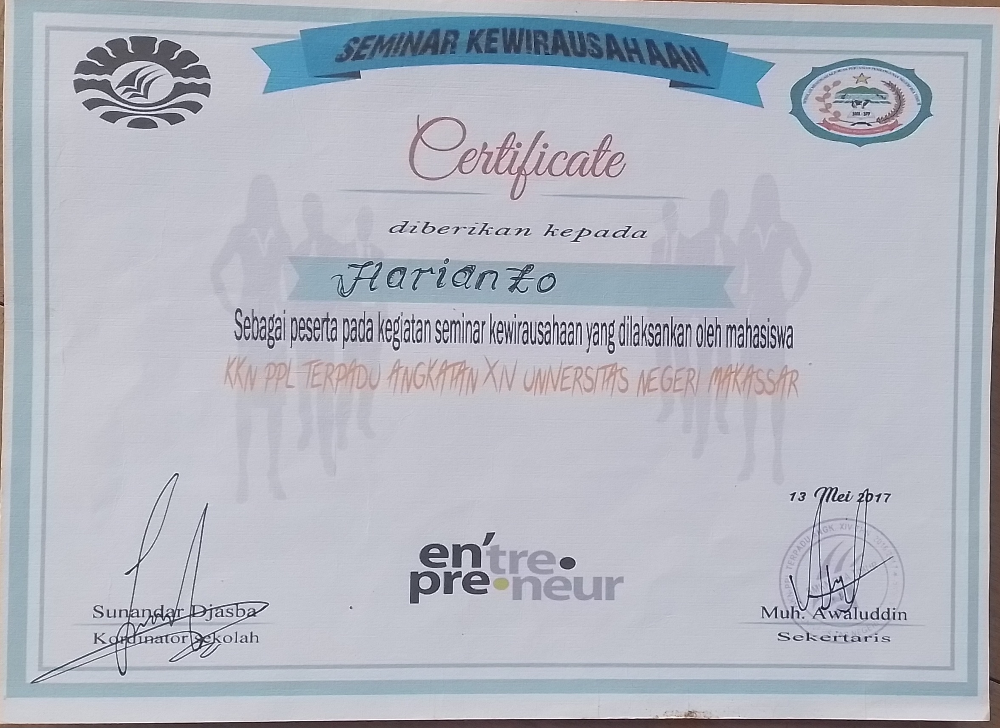
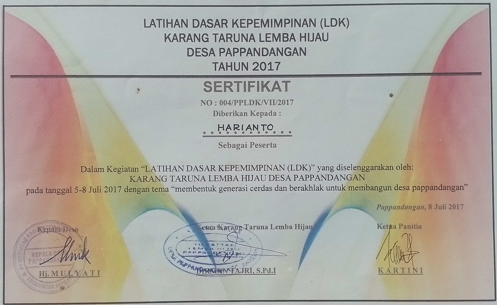
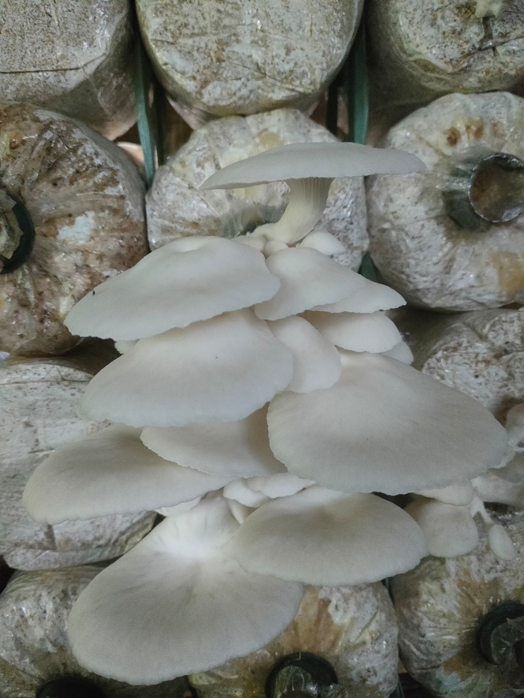
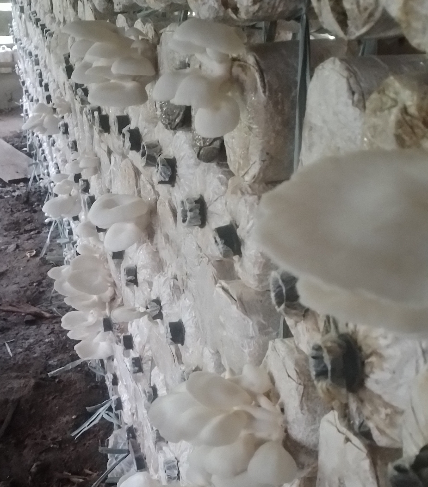
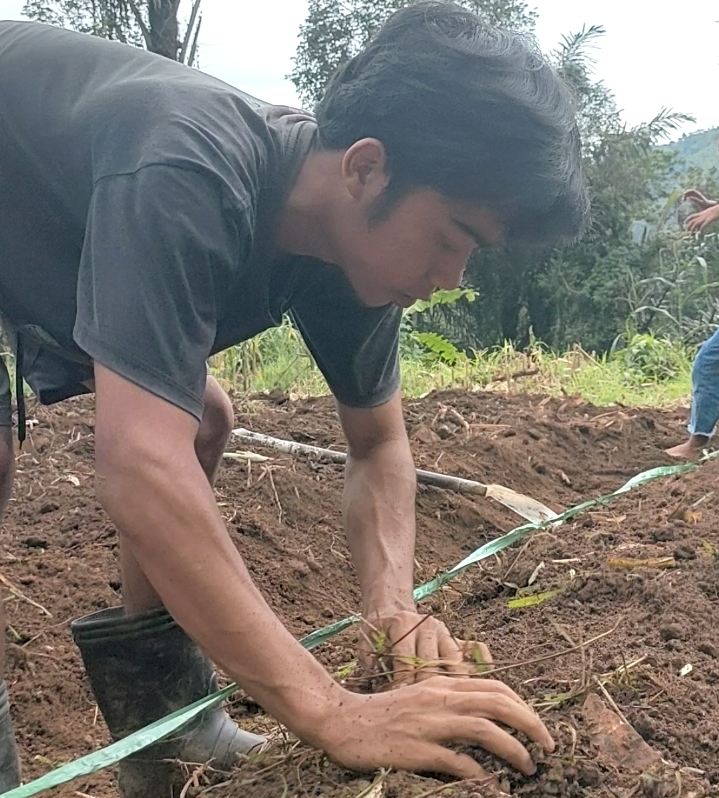
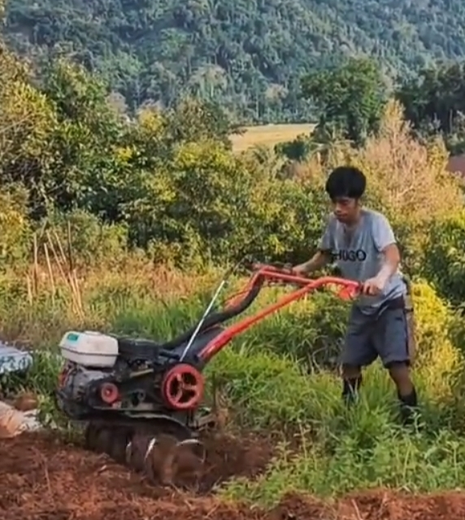
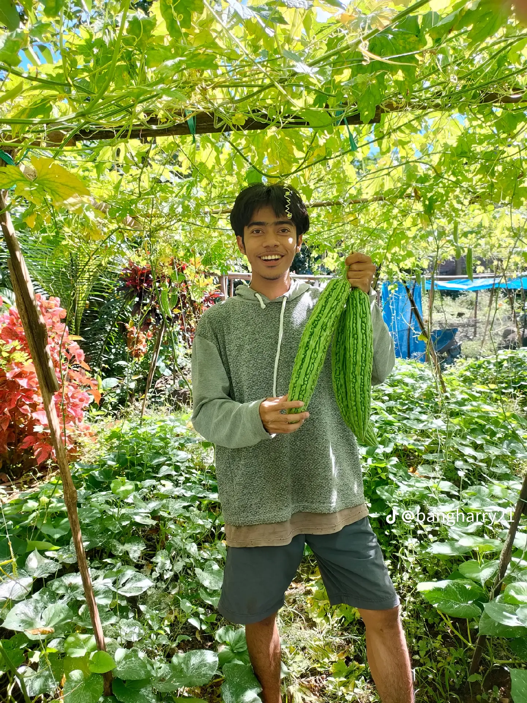
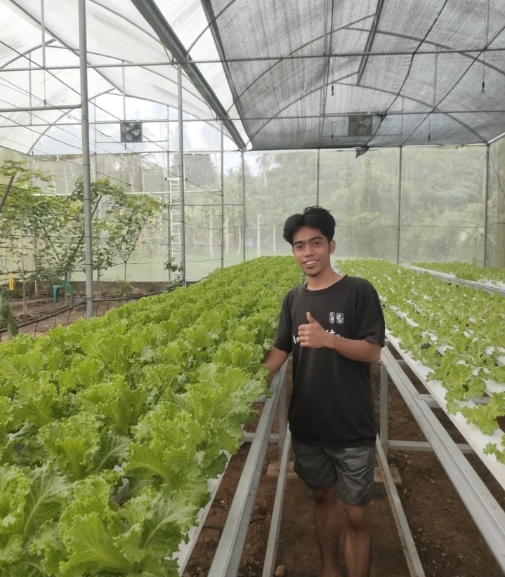

Agricultural Portfolio
Hello, I am Harianto
Farmers & Agribusiness
I have an interest in agriculture, agribusiness, agricultural technology, and the development of agricultural-based businesses.
{kind=link}
{kind=link}

About me
Who I am?
I have a strong interest in agriculture
and agribusiness. I am keen on developing
the agricultural sector by leveraging technology
and innovation.
For me, agriculture is not just about producing
goods, but also about transforming agricultural
produce into business opportunities that offer
added value.
I am 25 years old, a hardworking and loyal
person who is committed to achieving my goals.
I am always willing to learn new things, take on
challenges, and work responsibly with others. I
believe that dedication, consistency, and loyalty
are important qualities for building a successful
career in agriculture and agribusiness.
Knowledge
absorption.
contributes to plant fertility.
flowering.
quality.
provides calcium.
water absorption, especially during dry seasons.
harmful soil pathogens.
fungal diseases in plants.
plant pests.
SKILLS
My Skills
Land Preparation
Understanding the stages of land preparation and the application of basic fertilizers to support long-term agricultural productivity.
Crop Cultivation
Understanding the basic principles of crop cultivation and plant maintenance.
Agricultural Equipment Operation
Able to operate agricultural equipment available in my area, including hand tractors and farm tractors.
Fertilizer Knowledge
Understanding the importance of fertilizers in supporting healthy plant growth, including nitrogen, potassium, phosphorus, and other essential nutrients.
My Certifikates
{kind=link}

certifikat of work experience
around 25 months
{kind=link}

Entrepreneurship Seminar Certifikate
organized by the KKN team of makassar university

basic leadership training certifikat
organized by the youth organization
EXPERIENCE
MY EXPERIENCE
Farmer & Farm Manager
My journey in agriculture began in 2020, when I started taking farming seriously after graduating from a vocational high school specializing in agriculture. Since then, I have managed my parents' cocoa plantation while also cultivating various horticultural crops such as vegetables, chilies, cucumbers, and pumpkins. For short-term crops, I sometimes rent additional farmland to expand my farming activities. For plantation crops, I focus on maintaining and developing cocoa and durian plantations . Through hands-on experience in the field, I have learned about land preparation, crop cultivation, plant maintenance, and the various challenges involved in agricultural activities.
Active Member of Agricultural Organizations
Since 2022, I have been actively involved in several agricultural organizations and community initiatives. One of my most valuable experiences has been developing oyster mushroom cultivation together with local friends. In addition to being directly involved in managing the cultivation process, I have also contributed to educating the local community about the importance of understanding fertilizer use and plant nutritional needs. This experience has broadened my perspective that being a farmer is not only about managing land, but also about sharing knowledge, building collaboration, and contributing to the development of agriculture within the community.






Contak Me
let's Connect
If you would like to discuss agriculture, agribusiness, or potential collaborations, feel free to get in touch with me.